Campaign Projects
Home care · Food & beverage · Beauty · Technology
Audience research · Campaign planning · Content & influencer coordination · Performance tracking
Hi, I'm Pardis. I turn marketing strategies into campaigns that connect with audiences and deliver measurable results.
With over 4 years of experience across agency and in-house teams, I've worked on integrated campaigns, digital marketing, brand activations, and B2B events for brands including Henkel, Samsung, and Nestlé.
My experience spans 17 multichannel campaigns, 4 brand activations, and 6 events, including a sampling campaign that engaged 37,000+ participants. I've also helped increase organic traffic by 25% and reduce cost per lead by 12%.
Now based in Toronto, I combine creative thinking, data-driven decisions, and hands-on execution to bring marketing ideas to life. I also use digital tools and AI to improve research, planning, and workflows while keeping human creativity at the centre of my work.
Home care · Food & beverage · Beauty · Technology
Audience research · Campaign planning · Content & influencer coordination · Performance tracking
Consumer goods · Technology · Hospitality · Interior design
Client briefs · Content calendars · Team timelines · Feedback & approvals
4 B2B industry events · 2 technology & entrepreneurship events
Partner outreach · Email invitations · RSVPs · Vendor & logistics coordination
Experiential sampling · Interactive brand experiences
Activation planning · Promotional materials · On-site support · Engagement tracking
Pril
Program structure · Membership tiers · Content approach · Prototype launch
Henkel · Digikala strategy, sales analysis & annual budgeting
Pril · Annual social media strategy & budget planning
Selected campaigns and projects across integrated marketing, brand activations, digital content, and B2B events.
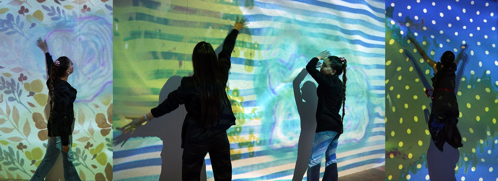
EXPERIENTIAL MARKETING
A smart sampling activation with 37,000+ participants.
View case study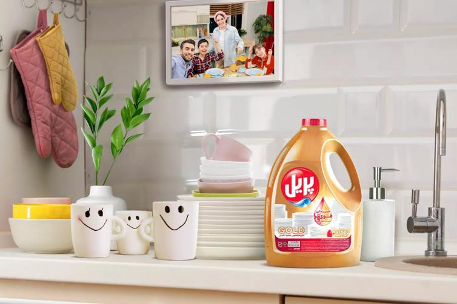
CAMPAIGNS & BRAND STRATEGY
Integrated campaigns, annual social strategy and loyalty program design.
View case studyCSR & BRAND ACTIVATION
Campaigns that paired digital storytelling with community engagement.
View case study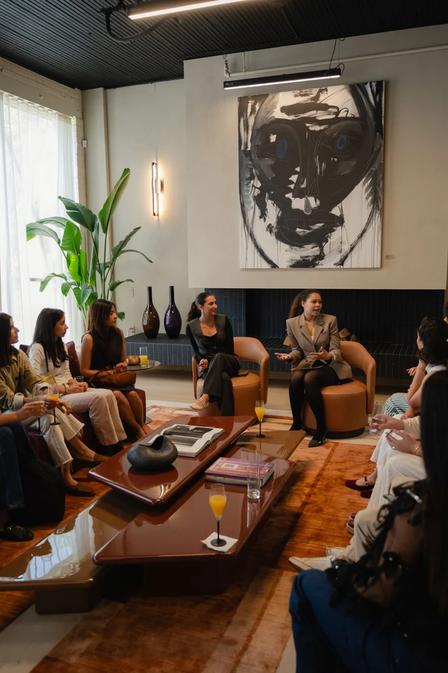
INDUSTRY EVENTS
Four trade events supported through partner outreach and coordination.
View case studyCREATIVE & BRAND STRATEGY
Brand positioning, editorial concepts and digital creative production.
View case studyDIGITAL & EXPERIENTIAL
Product launches, influencer campaigns and experiential sampling.
View case studyINDEPENDENT MARKETING TOOL
From campaign data to clearer next steps.
Explore campaign KPIs, spot measurement gaps, and review practical next steps in an interactive tool.
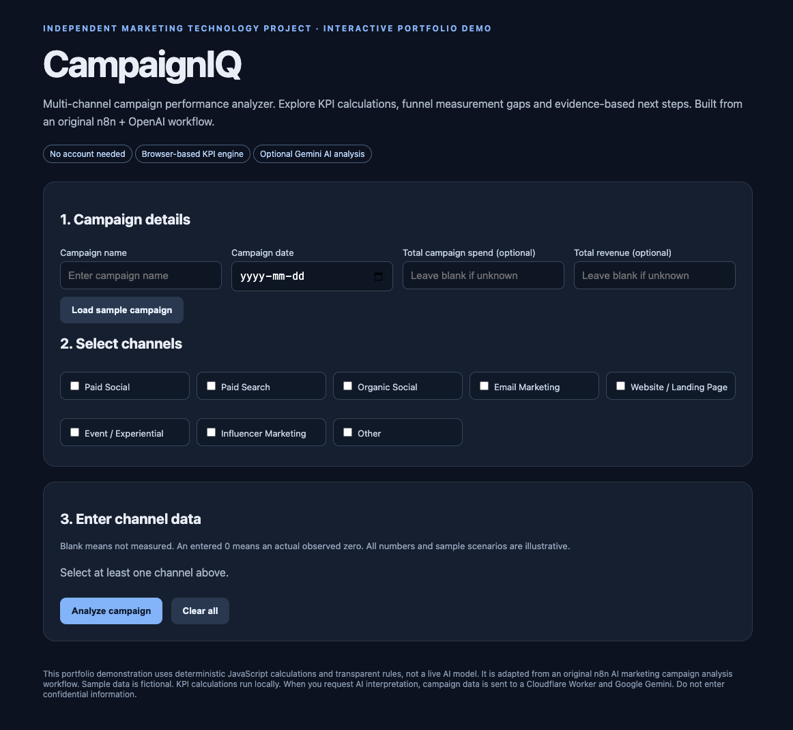
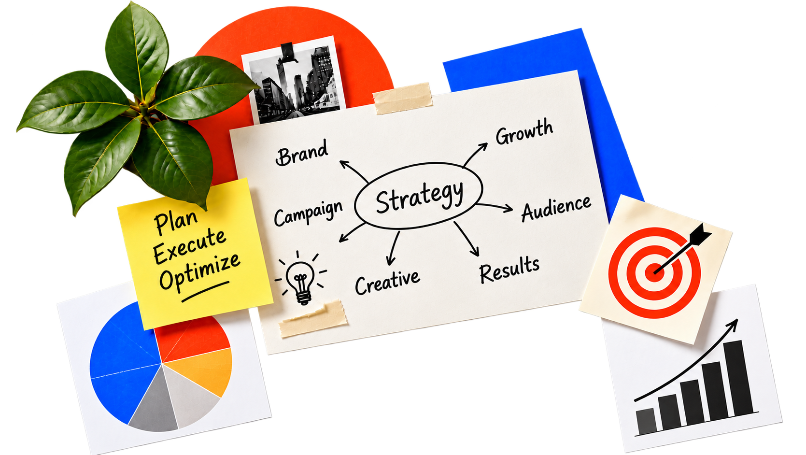
Brand • Campaign • Marketing Coordination
Strategy • Campaign Planning • Creative Execution
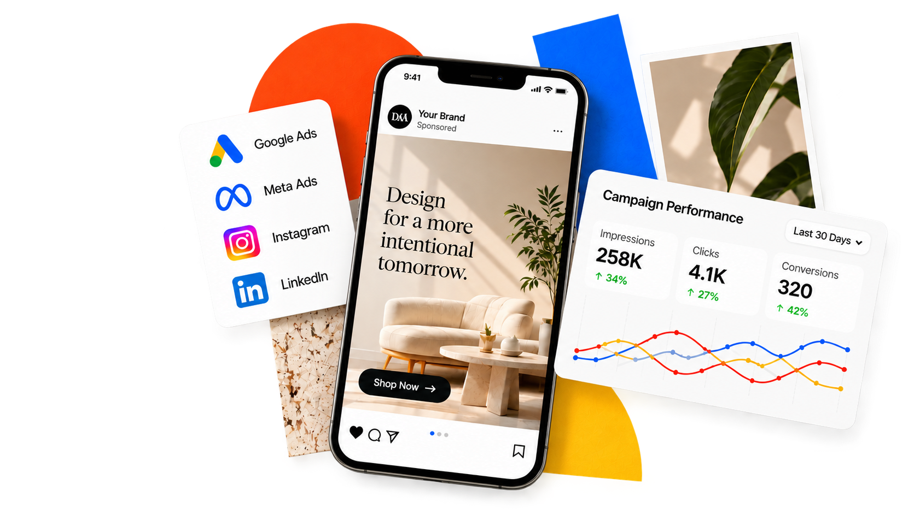
Google Ads • Meta
Paid Media • Targeting • Campaign Optimization
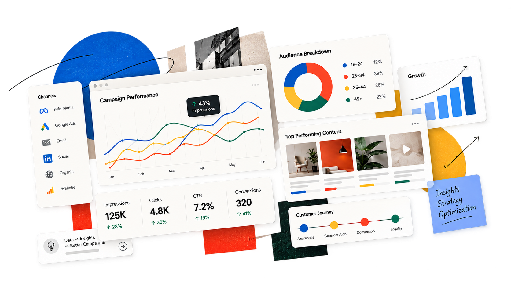
GA4 • Looker Studio • Excel
Dashboards • KPI Tracking • Performance Insights
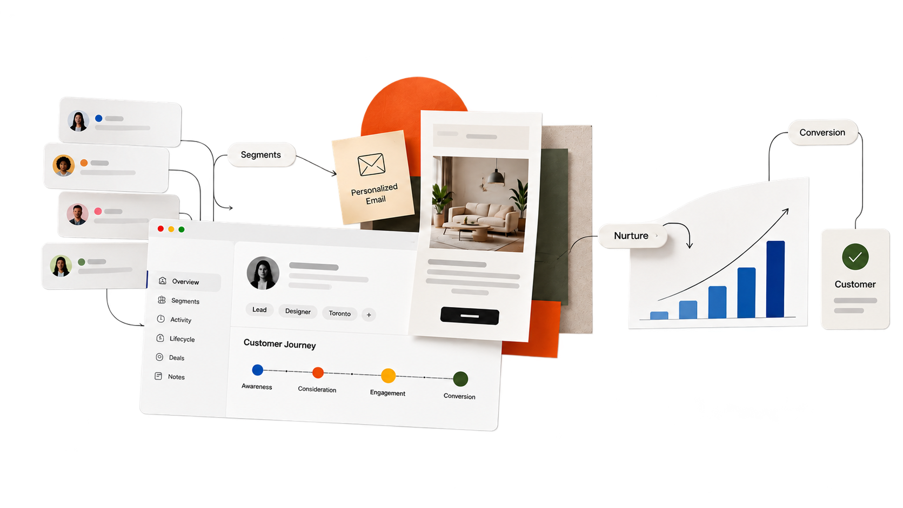
Salesforce • HubSpot
CRM • Segmentation • Marketing Automation
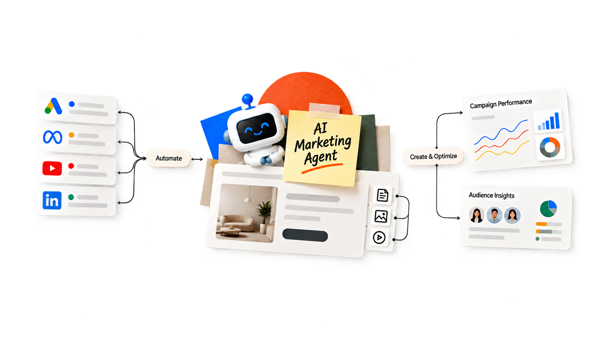
n8n • AI
Workflow Automation • Campaign Analysis • Insights
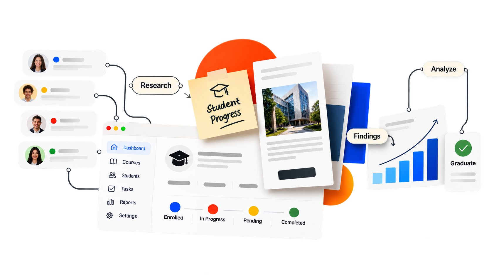
Brand • Campaign • Go-to-Market
Strategy • Consumer Insights • Integrated Campaigns
Seneca Polytechnic,
Toronto, ON
Kharazmi University
Azad University
GA4 • Meta • Google Ads • LinkedIn
Salesforce • HubSpot • Dynamics • Mailchimp • Klaviyo
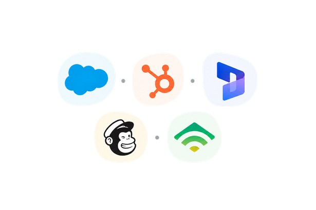
Canva • Illustrator • Photoshop
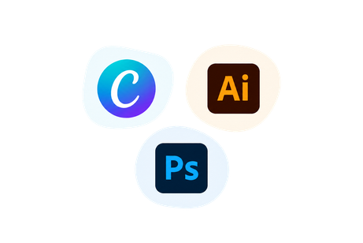
ChatGPT • n8n • Copilot
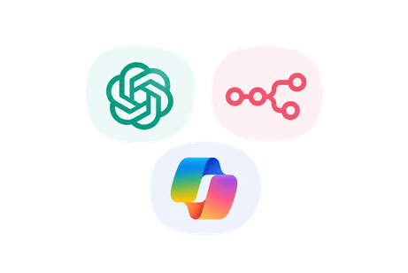
Microsoft 365 • Monday • Notion
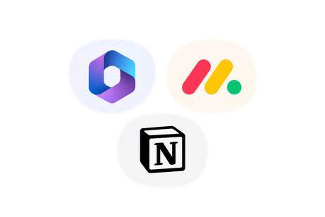